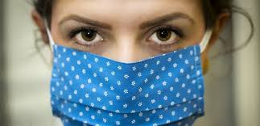

Medidas de Prevencion
EL LAVADO DE MANOS
Nuestro aliado más poderoso.
Aún quedándote en casa debes continuar con las medidas de limpieza como lavarte continuamente las manos.
Aquí te presentamos la mejor forma de hacerlo.
- Moja tus manos.
- Aplica suficiente jabón.
- Frota las palmas.
- Luego los dorsos.
- Ahora talla los dedos entrelazados.
- Enjuaga bien con agua.
- sécate muy bien con una toalla.
EVITE EL CONTACTO CON PERSONAS
1-Evite el contacto cercano con personas que están enfermas, incluso dentro de su casa.
2-De ser posible, mantenga una distancia de 6 pies entre la persona enferma y otros miembros de su hogar.
3-Mantenga distancia de otras personas fuera de su hogar.
4-Recuerde que algunas personas que no tienen síntomas pueden propagar el virus.
5-No se reúna en grupos.
6-Manténgase alejado de lugares muy concurridos y congregaciones masivas.
CUBRIRSE LA BOCA

1.-Si se encuentra en un ámbito privado y no tiene puesta la cubierta de tela para la cara,
recuerde siempre cubrirse la boca y la nariz con un pañuelo desechable o con la parte interna del codo al toser o estornudar.
2.-Bote los pañuelos desechables usados a la basura.
3.-Lávese las manos inmediatamente con agua y jabón por al menos 20 segundos.
Si no dispone de agua y jabón, límpiese las manos con un desinfectante de manos que contenga al menos un 60% de alcohol.
LIMPIAR Y DESINFECTAR
1.-Limpie Y desinfecte diariamente las superficies que se tocan con frecuencia .
Esto incluye las mesas, las manijas de las puertas, los interruptores de luz, los mesones, las barandas, los escritorios,
los teléfonos, los teclados, los inodoros, los grifos, los lavamanos y los lavaplatos.
2.-Si las superficies están sucias, límpielas. Lávelas con agua y detergente o jabón antes de desinfectarlas.
Luego, use un desinfectante de uso doméstico.
3.-La mayoría de los desinfectantes comunes para el hogar registrados funcionarán.
Pulsa para optener mas informacion